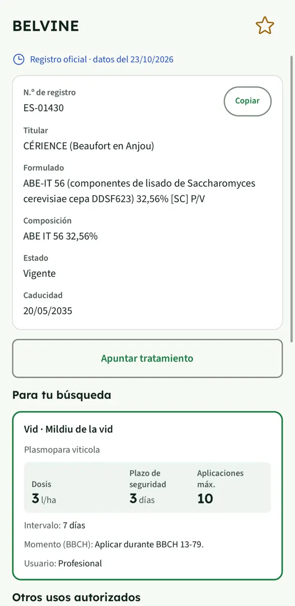
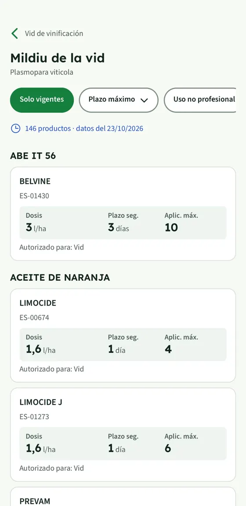
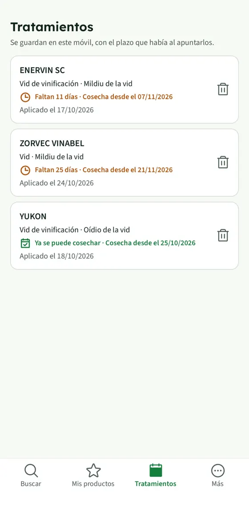

Sulfata
Diu als pagesos quins productes fitosanitaris estan autoritzats a Espanya per al seu cultiu i la seva plaga, amb la dosi, el termini de seguretat i el nombre màxim d'aplicacions.
- Funciona al camp, sense cobertura
- Tot el registre oficial (més de 2.000 productes i 60.000 usos) va dins de l'app en una base SQLite comprimida d'uns 2,5 MB.
- Dades sempre al dia, sense servidor
- Un pipeline amb GitHub Actions descarrega el registre del Ministeri, el converteix, en valida el resultat i el publica. L'app s'actualitza sola.
- Calendari i avisos
- Calcula el primer dia de collita després de cada tractament i avisa si un producte desat deixa d'estar autoritzat.
- Privacitat per defecte
- Sense comptes, sense anuncis i sense seguiment. Subscripció gestionada amb RevenueCat i errors a Sentry (regió UE).


